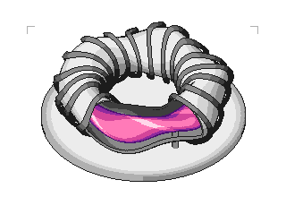
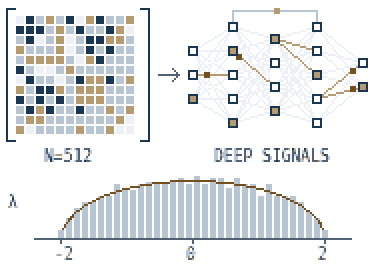

Hello, I’m
Yassine Alouini
Computer vision, multi-modal applications, and LLMs for coding & mathematical reasoning.


Computer vision, multi-modal applications, and LLMs for coding & mathematical reasoning.

